“O PRODIGIOSO PRANTO”
O FATO REPERCUTIU NO MUNDO
As lagrimas da
SANTA MÃE prolongou-se, com intervalos irregulares, durante quatro dias. E, assim,
puderam-se contar aos milhares as testemunhas provenientes de 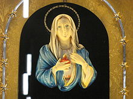
Entrementes, o Arcebispo local, Monsenhor Ettore Baranzini, julgou melhor proibir momentaneamente os seus sacerdotes, religiosos e freiras de se aproximarem do local do prodígio. Ademais, pediu orientações para dois peritos na matéria – o Cardeal Schuster e o Padre Gemelli – além de incumbir pessoas de sua inteira confiança de reunirem todos os elementos (inclusive algumas testemunhas sob juramento) para a redação de um relatório fidedigno a ser enviado ao competente Tribunal Eclesiástico. Também devia fazer parte desse dossiê o parecer de uma conspícua comissão médica constituída de 14 membros, incluindo-se até o Dr. Michele Cassola, conhecido por seu agnosticismo religioso. O veredicto da Comissão Médica comprovou de que se tratava, efetivamente, de “lágrimas humanas”.
ENCANTADO COM AS LÁGRIMAS DA SANTA MÃE
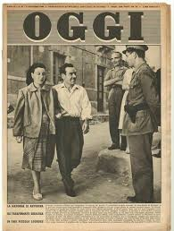 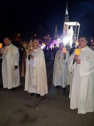
Dom Giuseppe acompanhou e teve a oportunidade de presenciar tantas graças ali concedidas, que resolveu escrever um livro bem detalhado, narrando todas aquelas ocorrências sobrenaturais, ao qual deu o nome “HISTÓRIA DE NOSSA SENHORA DAS LÁGRIMAS” que passou a ser uma das melhores obras de consulta sobre aquele prodígio mariano em Siracusa.
O milagroso acontecimento repetiu-se do dia 29 de Agosto ao dia 1º de Setembro de 1953, na casa dos cônjuges Iannuso. As lágrimas foram analisadas e resultaram ser fluido lacrimal real. A devoção que se seguiu foi de enormes proporções.
Após as minuciosas investigações e as avaliações dos especialistas, os Bispos da região da Sicília, por unanimidade, concluíram que se tratava de um fenômeno sobrenatural verdadeiro e autorizaram no local o culto a NOSSA SENHORA sob o título de “A VIRGEM DAS LÁGRIMAS." Na emissora de Rádio Vaticano, no dia 17 de outubro de 1954, também o Papa Pio XII manifestou o seu reconhecimento sobre o fenômeno mariano ocorrido em Siracusa.
PARA O POVO REZAR
A pequena efígie da MADONNA DELLE LACRIME permaneceu temporariamente na vizinha Piazza Serapide. O SANTUÁRIO DA MADONNA DELLE LACRIME definitivo foi projetado em 1957 pelos arquitetos franceses Michel Andrault e Pierre Parat após um concurso internacional.
Todavia a construção do novo Templo começou em 1966 mas, devido à extrema modernidade do projeto, que desde o início causou muita polêmica. Alguns cidadãos gostavam, enquanto outros mais exaltados o consideravam “monstruoso”; e tantas razões foram apresentadas, que a obra só terminou em 1994.
FOTOGRAFIAS DA BASÍLICA SANTUÁRIO DA VIRGEM DAS LÁGRIMAS
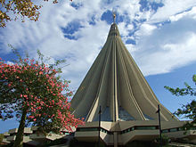
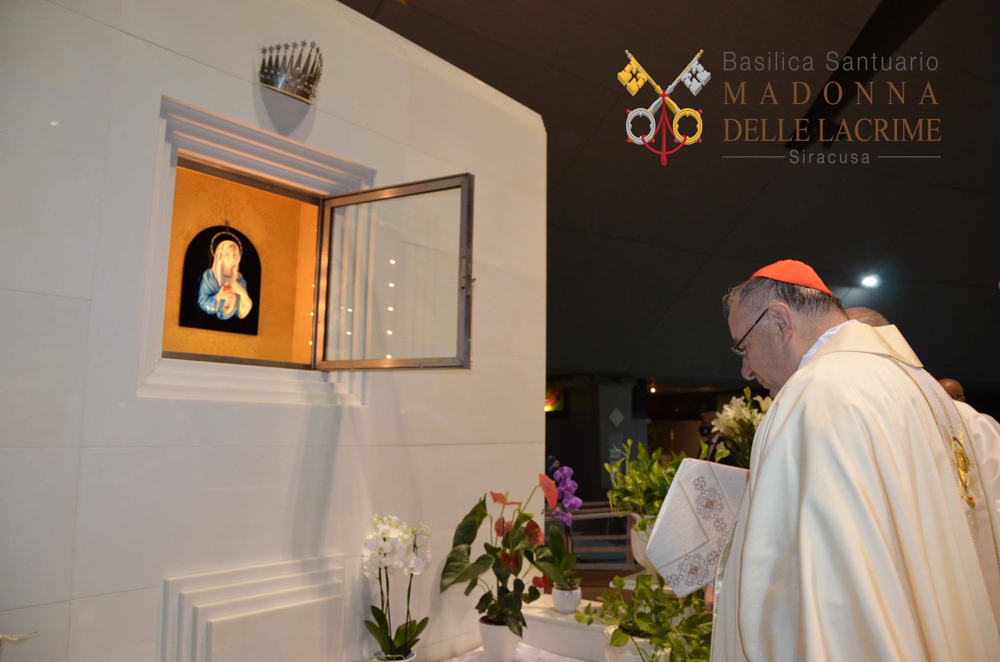
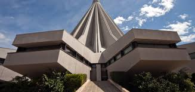
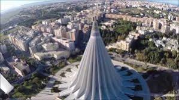
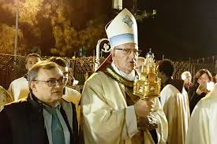
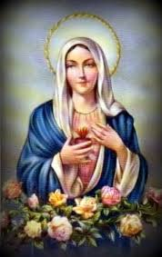
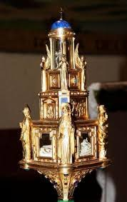
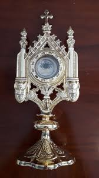
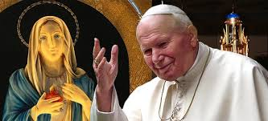
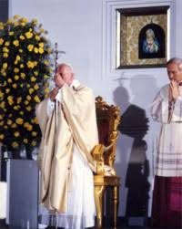